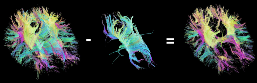

The FNNDSC Code Portal
We are the Fetal Neonatal Neuroimaging & Developmental Science Center at Children's Hospital Boston. Find our code here.
|
nipypeWheelsnipypeWheels is an interface for easy pipelining using Nipypehttps://github.com/FNNDSC/wheels#readme $ git clone git://github.com/FNNDSC/wheels |
TrackVis UtilitiesSome handy utilities for working with TrackVis (*.trk) fileshttps://github.com/FNNDSC/TrackVisUtilities#readme $ git clone git://github.com/FNNDSC/TrackVisUtilities |
 |
The X ToolkitWe contribute code and data to the X Toolkit: WebGL for Scientific Visualizationhttps://goXTK.com $ git clone git://github.com/xtk/X.git |
Cpp_matrixTA C++ Matrix library.https://github.com/FNNDSC/Cpp_MatrixT $ git clone git@github.com:FNNDSC/Cpp_MatrixT.git |
C UtilsSimple C++ Utilities for processing option files, datagram sockets, messaging and .trk-file reading.https://github.com/FNNDSC/C_utils#readme $ git clone git@github.com:FNNDSC/C_utils.git |
Brain Surface and Tractography ViewerWe created a prototype application to visualize cortical surface reconstructions and fiber tracts generated by FreeSurfer and the Diffusion Toolkit, two automated brain imaging tools developed at the MGH Martinos Center for Biomedical Imaging.@ChromeExperiments $ git clone git@github.com:FNNDSC/web.git |